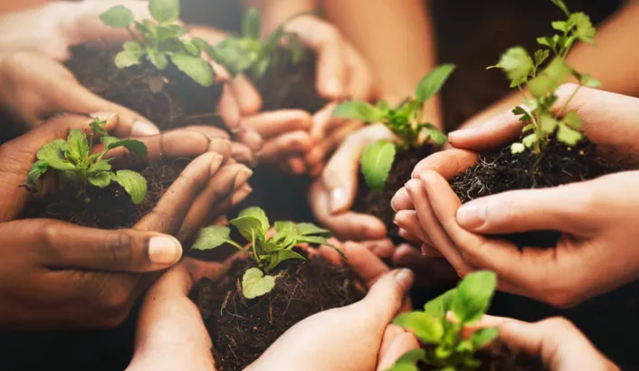

Rejoignez John Chester, réalisateur de "The Biggest Little Farm", pour une projection
exclusive suivie d’une rencontre exceptionnelle. Découvrez les coulisses de sa ferme régénérative et échangez
avec lui sur l’agriculture durable et la biodiversité. Un moment inspirant pour explorer l’impact du cinéma sur
l’écologie. Places limitées – Réservez vite !
Un Voyage Cinématographique en Pleine Nature
Plongez au cœur de la nature avec les projections en plein air du Festival CinéNature.
Chaque soirée, profitez d'une sélection de films d'auteur et documentaires engagés, projetés sous les étoiles
dans un cadre exceptionnel, sur la presqu'île du Malsaucy. Les films mettent en lumière des thèmes écologiques
et sociaux, éveillant les consciences tout en offrant une expérience cinématographique immersive. Apportez votre
couverture et laissez-vous transporter par la magie du cinéma en plein air, entouré de la beauté naturelle. Une
expérience unique où la nature et l’art se rencontrent.
Les Ateliers Interactifs

Participez à nos ateliers interactifs et découvrez des façons pratiques de contribuer
à un avenir plus durable. Les ateliers, animés par des experts en écologie et des artistes locaux, couvrent des
thématiques comme le recyclage créatif, la réduction des déchets ou encore la permaculture. Ces activités
permettent d’approfondir les sujets abordés dans les films projetés, tout en offrant des solutions concrètes à
mettre en œuvre dans la vie quotidienne. Ouverts à tous, ces ateliers favorisent l’échange et la créativité,
tout en sensibilisant aux enjeux environnementaux actuels.
Rencontres avec les Réalisateurs
Le Festival CinéNature vous propose des rencontres exclusives avec les réalisateurs et
les acteurs des films programmés. Ces discussions offrent un moment privilégié pour échanger autour des œuvres
et des thèmes écologiques abordés. Vous aurez l'occasion de poser vos questions, de comprendre les inspirations
derrière chaque projet, et de découvrir les défis que ces cinéastes rencontrent dans leur démarche artistique.
Ces moments de partage favorisent une compréhension plus profonde des films et encouragent un dialogue engagé
autour de la protection de l'environnement et des solutions durables.
Films Locaux et Jeunes Talents
Le Festival CinéNature met un point d'honneur à valoriser les jeunes talents locaux à
travers une sélection spéciale de courts-métrages et de films régionaux. Ces œuvres, souvent engagées, abordent
des thématiques environnementales tout en reflétant la richesse culturelle et artistique de la région. Venez
découvrir de nouveaux réalisateurs, artistes en devenir, qui utilisent leur créativité pour sensibiliser aux
questions écologiques. En soutenant ces talents émergents, le festival participe à la mise en avant de la
créativité locale et encourage la production cinématographique durable.